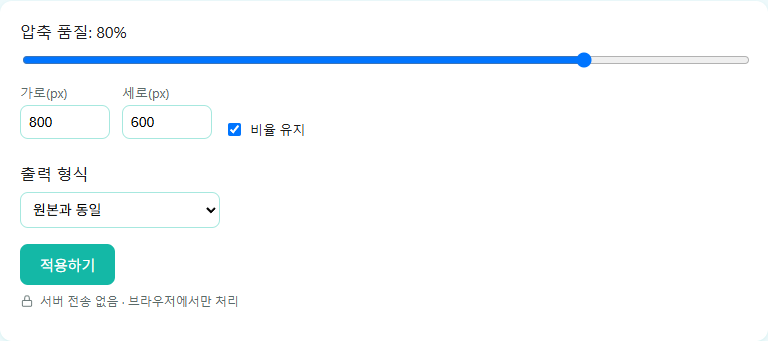

IMAGE TOOLBOX / GUIDE
카카오톡 사진, 왜 화질이 떨어질까
원본 그대로 보내는 방법과, 반대로 용량을 줄여서 안정적으로 보내는 방법을 정리했습니다.
카카오톡은 사진을 기본적으로 압축해서 보냅니다
채팅방에서 사진을 전송할 때 별도로 지정하지 않으면 카카오톡이 자동으로 용량을 줄여서 보냅니다. 여러 장을 빠르고 안정적으로 주고받을 수 있게 하기 위한 기본 동작입니다. 그래서 원본 사진과 비교하면 카카오톡으로 받은 사진은 화질이 떨어져 보일 수 있습니다.
원본 화질 그대로 보내는 방법
매번 선택해서 보내기. 채팅방에서 '+' 버튼 → 앨범에서 사진을 고른 뒤, 사진 선택 화면 우측 하단의 '원본' 버튼을 눌러 활성화하고 전송하면 그 사진만 원본 화질로 전송됩니다.
기본 설정을 원본으로 바꾸기. 모바일 앱에서 더보기 → 설정 → 데이터 및 저장공간 → 미디어 전송 관리에 들어가면 사진 화질을 저용량/일반 화질/원본 중에서 고를 수 있습니다. 여기서 원본을 선택하면 이후 전송하는 사진이 계속 원본 화질로 나갑니다. PC 카카오톡에는 이 설정 메뉴가 따로 없습니다.
미디어 전송 관리 설정의 '저용량'과 '일반 화질'도 서로 다릅니다. 데이터가 부족한 상황이 잦다면 저용량으로 맞춰두고, 화질이 중요한 사진만 그때그때 '원본' 버튼으로 따로 보내는 방식이 데이터 사용량과 화질을 함께 관리하기에 무난합니다. 카카오톡이 사진을 기본적으로 압축하는 이유도 여기 있습니다 — 특히 사진을 많이 주고받는 단체 채팅방일수록 서버 부하와 전송 속도 문제가 커지기 때문에, 매번 원본으로 설정해두면 그만큼 데이터도 더 쓰고 전송 속도도 느려질 수 있습니다.
파일로 보내기. '+' 버튼 → 파일에서 사진 파일을 직접 첨부하면 사진이 아니라 파일로 취급되어 압축 없이 전달됩니다.
반대로 용량을 더 줄여서 보내고 싶다면
사진을 여러 장 한꺼번에 보내야 하거나 상대방의 데이터를 아껴주고 싶을 때는 원본 대신 미리 압축해서 보내는 게 더 유리합니다. 이미지 압축 도구에서 품질을 조절해 용량을 줄인 뒤 전송하면 됩니다.

자주 묻는 질문
원본으로 설정해서 보내도 카카오톡이 다시 압축하나요?
원본 옵션을 켜고 보낸 사진은 카카오톡이 추가로 압축하지 않고 그대로 전송됩니다.
여러 장을 한 번에 원본으로 보낼 수 있나요?
네. 앨범에서 여러 장을 선택한 상태에서 '원본' 버튼을 활성화하면 선택한 사진 전부 원본 화질로 전송됩니다.
PC 카카오톡에서도 원본으로 보낼 수 있나요?
PC 카카오톡에는 모바일처럼 화질을 저용량/일반/원본으로 선택하는 메뉴가 따로 없습니다. 원본 화질이 필요하다면 파일로 첨부하는 방법을 이용하는 것이 안전합니다.
원본으로 보내면 상대방 기기 저장 용량도 커지나요?
네. 원본 화질 사진은 압축한 사진보다 파일 용량이 크기 때문에, 받는 사람 기기에도 그만큼 더 큰 용량으로 저장됩니다. 여러 장을 자주 원본으로 주고받는다면 상대방의 저장 공간도 함께 고려하는 것이 좋습니다.
오픈채팅에서도 원본으로 보낼 수 있나요?
네. 오픈채팅도 카카오톡의 채팅방 종류 중 하나일 뿐이라, '원본' 버튼과 미디어 전송 설정이 일반 채팅방과 동일하게 적용됩니다.
동영상도 사진과 같은 방법으로 원본 전송되나요?
아니요. 사진은 앨범에서 고를 때 '원본' 버튼을 켜면 되지만, 동영상을 원본 화질 그대로 보내려면 '+' 버튼 → 파일에서 동영상을 직접 첨부해야 합니다. 일반적인 방법으로 동영상을 보내면 카카오톡이 화질과 용량을 자동으로 줄입니다.